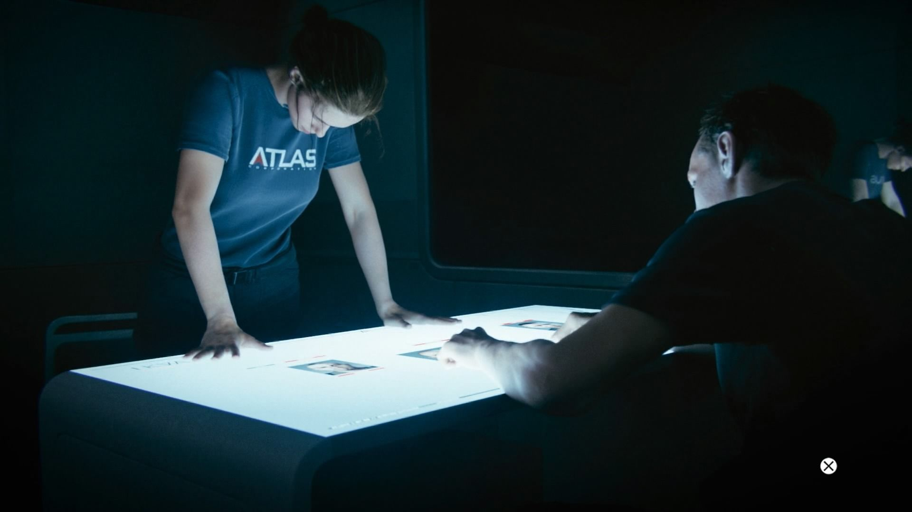

Hades Whereabouts Intel
Danois is then interrogated by Ilona, who manages to extract the intel that points to Hades being in Greece. Irons, now a member of the U.S. Defense committee, shares this intel with fellow U.S. Officials despite their doubts of how solid it is. Wanting to catch the man responsible for chaos caused four years back, Irons proposes that he sends an Atlas team to finish this once and for all, but is chastised by the committee as they see it as committing an act of war despite Atlas being a private company. Irons then leaves with Mitchell and Gideon, wanting them to be on the ground in the next few hours.
Previous Story Next Story: Hades Death
To be continued... Back to welcome screen